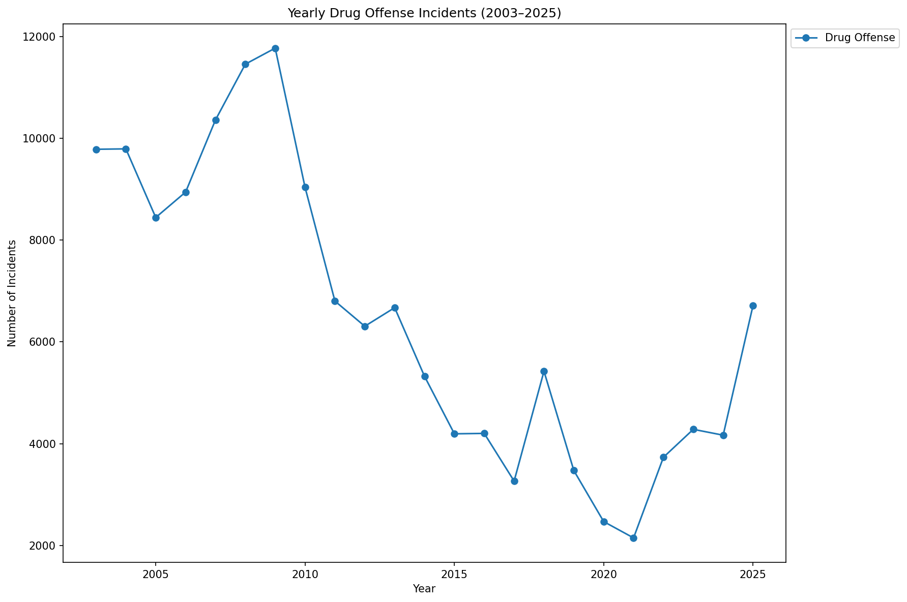

Yearly Drug Offense Trends
The chart below shows how drug-related offenses have evolved year over year in San Francisco, revealing long-term shifts in enforcement and reporting.

Crime by Hour of Day
An interactive look at how crime frequency varies throughout the day. Explore the visualization below to see which hours see the most reported incidents.
Open interactive visualizationAbout This Project
This site was built as part of a Social Data course project. The data comes from publicly available San Francisco crime records and is visualized to uncover spatial and temporal patterns.